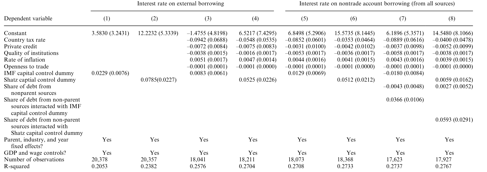
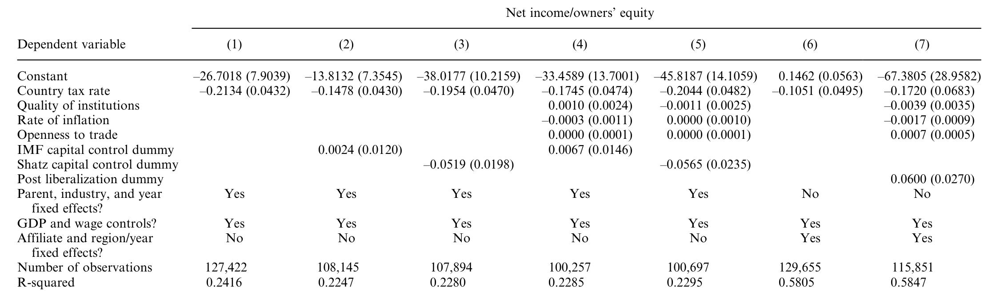
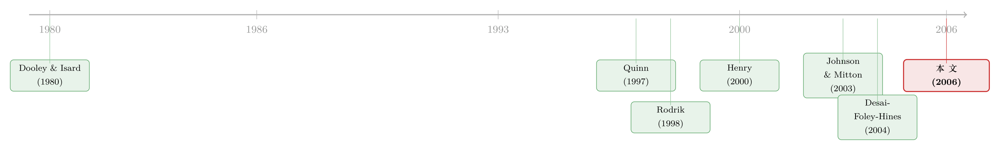

想拦住资本，又想招来外资——跨国公司如何把这道矛盾「钻」成了一笔账
本文读的是 Desai, Foley & Hines (2006, Review of Financial Studies)：当一国既想用资本管制 (capital controls) 拦住资金外逃、又想招徕外商直接投资 (FDI) 时，跨国公司并不会乖乖就范——它们压低当地报表利润、提高分红的频率来「绕」开管制。结果是，管制对账面利润的扭曲相当于把公司税率提高 27%，受管制国家的子公司多付 5.25 个百分点的当地借款利率；而一旦管制放开，子公司的厂房设备 (PPE) 投资会以每年快 6.9% 的速度扩张。
1 一道天生拧巴的政策
先把一个矛盾摆到桌面上。
一个发展中国家，常常同时怀着两个心思。第一个心思是「别让钱跑了」：一旦风吹草动，本国资本会夺路而逃，汇率崩、利率飙、银行挤兑接踵而至，于是政府忍不住要在资本账户上装一道闸门——这就是资本管制 (capital controls)。第二个心思却恰恰相反：它又眼巴巴地盼着外国人把钱投进来，因为外商直接投资 (foreign direct investment, FDI) 被认为能带来技术、就业和增长（Aitken and Harrison, 1999）。
问题是，这两个心思天生打架。你装一道闸门拦住资本流出，可外国投资者最在意的，恰恰就是「我赚的钱将来能不能拿回家」。一道拦住流出的闸门，在外资眼里就是一道拦住自己利润回流的闸门。于是一个再自然不过的问题冒了出来：资本管制到底是怎样、又在多大程度上劝退了外商投资？ 这个问题对政策制定者关系重大，可在这篇文章之前，它居然「只受到了有限的关注」。
这就是 Desai、Foley 和 Hines 三人想回答的事。而他们手里,握着一副别人没有的好牌。
2 一副好牌：同一个「妈」，不同的「国」
研究资本管制最大的麻烦有两个。
第一个麻烦是内生性。 管制不是天上掉下来随机撒到各国头上的——一个国家选择上管制，往往正因为它本身就动荡、就缺乏制度、就让投资者不安。于是你看到「管制国家投资少」，根本分不清是管制赶走了投资，还是那些一开始就让人不敢投的条件，同时催生了管制、又压低了投资。
第二个麻烦是测不准。 正如 Edison et al. (2002) 指出的，实证里常用的资本管制度量「都很钝」——最流行的国际货币基金组织 (IMF) 那套 0/1 分类，只告诉你「这个国家有没有管制」，却说不清管制到底卡住了谁、卡在哪个环节。
那真正关键的一步在哪里？在数据。作者用的是美国经济分析局 (Bureau of Economic Analysis, BEA) 1982–1997 年「美国对外直接投资」的机密子公司层面面板。这套数据的妙处在于：同一家美国母公司，往往在好几个国家同时开设子公司——有的国家有资本管制，有的没有。于是作者可以把同一个「妈」名下、分处不同「国」的子公司放在一起比，再加上母公司（firm）固定效应。
这一招几乎是把上面那个内生性麻烦正面化解了：母公司的经营文化、行业属性、全球战略、风险偏好——所有「公司层面」的东西，都被固定效应吸收掉了。剩下的，是同一家公司在「管制 vs. 不管制」两类东道国之间表现出的差异。它当然不能完全排除「管制国家本身就不一样」，但它把识别从「国与国之间」拉到了「同一家公司的不同子公司之间」，可信度上了一个台阶。
这套「内部资本市场」视角并非凭空而来。Desai, Foley & Hines (2004b) 早就记录过，跨国公司能用母公司提供的债务去替代当地借款，在金融不发达的国家尤其如此。换句话说，跨国公司天生就有一套别人没有的「绕路」工具——而这恰恰是本文故事的引擎。（关于外资持有人这条线，亦可参见《外资真是「蝗虫」吗？》。）
3 一个小模型，把「绕路」写成方程
在跑回归之前，作者先用一个极简的模型把直觉钉死。这一步很重要——因为它告诉我们应该去数据里找什么样的「指纹」。
设一家面对资本管制的子公司，其投资价值为 \(V(K)\)，\(K\) 是它持有的资本存量。这一期它赚到利润 \(\pi\)，暂且把税收放一边，它有三条出路来处置这笔利润：留在当地再投资、以股利 \(d\) 汇回母公司、或者用转移定价之类的财务手段把利润「挪」到别的关联方去（记挪出的数量为 \(\sigma\)）。
后两条路都不是免费的。令 \(d^*\) 为公司真正想付的股利水平，\(d\) 为实际支付——偏离理想水平要付出代价 \(\phi(d^*-d)^2\)（\(\phi>0\)），反映税务与组织上的成本。资本管制的作用，就是强加一条约束：实际股利不能超过当局允许的上限 \(\bar d\)，即 \(d\le \bar d\)。而把利润挪到境外同样要花钱，成本是 \(\chi\sigma^2\)（\(\chi>0\)）。
于是子公司的问题，是选择 \(d\) 和 \(\sigma\) 去最大化：
$$\max_{d,\;\sigma}\;\Big[\,V(K)+d+\sigma\,\Big]$$
$$\text{s.t.}\quad K = K_{-1} + \pi - \big[\,d+\phi(d^*-d)^2\,\big] - \sigma\,(1+\chi\sigma)$$
$$d \le \bar d$$
这条预算约束，正是整个故事的「会计身份证」。把它逐项拆开看：
对 \(d\) 和 \(\sigma\) 分别求一阶条件，可以得到（其中 \(\lambda\ge 0\) 是约束 \(d\le\bar d\) 的影子价格）：
$$V'(K)=\frac{1}{1+2\chi\sigma}\qquad (2)$$
$$V'(K)=\frac{1-\lambda}{1+2\phi(d^*-d)}\qquad (3)$$
模型的全部张力，就藏在这两个一阶条件里。先看不绑定的情形：如果汇出上限根本没卡住公司（\(\lambda=0\)），那么 \(d=d^*\)、\(\sigma=0\)，代入 (2) 得 \(V'(K)=1\)——一切正常，资本管制唯一的伤害就只剩下「更高的利率」这一条（这一点我们下一节再说）。
但真正现实、也真正有意思的，是绑定的情形：当汇出上限卡住了公司（\(\lambda>0\)），就有 \(d=\bar d
这一串符号翻译成人话，是两句话：
- 第一， 当汇出受限时，实际股利「贴着天花板走」，对公司真实意愿 \(d^*\) 的变化变得迟钝——也就是说，受管制的子公司会更规律、更频繁地把能汇的额度先汇走，生怕错过窗口。
- 第二， \(V'(K)<1\) 意味着一部分利润被「困」在了当地：资本的边际价值低于 1，公司持有的资本超过了它本来想要的水平，于是它有动力通过转移定价等手段，把利润「挪」出这个国家。
这两句话，就是作者要去 BEA 数据里寻找的两枚指纹：异常规律的分红，和被系统性压低的当地账面利润。模型最漂亮的地方在于——它没有去赌「管制国家投资少」这种会被内生性污染的粗结论，而是预言了管制下企业行为的细微、却难以用别的理由解释的模式。这正是全文识别策略的灵魂。
4 三枚指纹，一一对上
4.1 借钱更贵
第一枚指纹最直接。Dooley and Isard (1980) 早就猜测：资本管制（或对管制的预期）会阻止国际资本把利率拉平，于是受管制国家的当地利率会偏高。作者用同一母公司、分处管制与非管制国家的子公司的借款成本来检验它——信用质量、公司特征都被母公司固定效应控住了。
结果干净利落：受资本管制国家的子公司，当地借款利率要高出 5.25 个百分点。这不是小数目。借钱更贵，直接抬高了资本成本，本身就足以劝退投资。

Table 3: presents estimated coefficients from regressions analyzing the
4.2 报表利润被「挪」走了
第二枚指纹来自模型的核心预言。如果利润真的在被系统性地挪出管制国家，那么受管制子公司的账面利润率就该偏低。数据再次对上：受管制国家的子公司，报告的利润率要低 5.2%。
作者还给出了一个让人印象深刻的标尺——这种利润扭曲的量级，相当于把公司税率提高了 27%。要知道，把利润从高税率国家挪到低税率国家，是国际税收里被研究得最透的避税行为；而这里，资本管制激起的利润转移，强度竟然可与一个相当可观的税率差相提并论。换句话说，在跨国公司眼里，「资本管制」和「高税率」是同一类东西：都是要想办法绕开的成本。

Table 4: summarizes results of specifications similar to those used to
4.3 分红更勤
第三枚指纹是分红行为。模型说，受管制子公司会「贴着上限」抢着把钱汇走。数据显示：身处资本管制国家的子公司，向美国母公司派发股利的概率要高出 9.8%——哪怕这样做要承担额外的税务与资源配置代价。这正是模型里「\(d\) 对 \(d^*\) 变化迟钝、只管把额度先用满」的现实投影。
到这里，三枚指纹——更贵的利率、更低的账面利润、更勤的分红——全部对上了模型的预言。而且，作者强调，当这些国家放开管制时，上述模式都会反转。这一点至关重要：它让我们更难用「管制国家本身就不一样」来解释全部结果，因为「不一样」的国情不会在管制放开的那一刻突然消失，而企业行为却确实跟着掉了头。
5 反转：闸门一开，投资就涌
故事讲到这儿，还差最后一块拼图。利率更高、避税成本更重，这些都「应该」劝退投资——可这是不是真的发生了？
作者的检验落在资本管制的自由化 (liberalization) 上。这一步用上了固定效应来研究放开前后的变化。结论是：管制放开之后，子公司的厂房设备 (property, plant, and equipment, PPE) 投资以每年快 6.9% 的速度增长。闸门一开，被压抑的投资就涌了进来。
这恰好闭合了整个逻辑链：高利率 + 高避税成本 → 在管制国家投资的吸引力下降 → 一旦放开，吸引力回升、投资反弹。这与金融学里另一条线索——股票市场自由化引发投资潮（Henry, 2000；Bekaert, Harvey & Lundblad, 2005）——遥相呼应，但本文从跨国公司这个独特的切口，照出了投资反应的来源：它更多地系于「无风险利率的下降」，而非「股权风险的重新定价」（这正是 Chari and Henry, 2002 的发现）。
还有一个「狗没有叫」的结果值得一提。不少人猜测资本管制能稳住宏观、降低波动，从而反而鼓励某类 FDI（Aizenman, 2003）。但作者在数据里没有找到任何证据表明，管制的实施或取消，会改变子公司盈利或增长的波动率。也就是说，「管制能稳经济、进而招商」这条辩护，在跨国公司层面站不住脚。
6 文献脉络
把这篇文章放回它生长的那片土壤，能看得更清楚。
最早的那一代问题，是宏观层面的争论：资本账户开放到底促不促进增长？这里有两派针锋相对。怀疑派以 Rodrik (1998) 为代表——他用 IMF 的管制分类，发现资本账户开放与增长之间没有显著的统计关联，并以此支持一种对金融开放的普遍怀疑（Bhagwati, 1998）。乐观派则以 Fischer (1998) 为代表，并由 Quinn (1997) 提供证据——用他自己构造的开放度指数，Quinn 报告了开放度变化与后续增长之间显著的正相关。两套度量、两套结论，争了很多年。
利率这条更微观的线索，可以追到 Dooley and Isard (1980)：他们指出管制会阻断利率的国际拉平。而分配后果这条线，则由 Morck, Strangeland & Yeung (2000) 和 Rajan & Zingales (2003) 点出——资本管制会偏袒既得利益的企业；Johnson and Mitton (2003) 用马来西亚的政治关联企业，把这层分配效应做实了。
金融学者随后把视角拉到企业层面：Henry (2000)、Bekaert & Harvey (2000)、Bekaert, Harvey & Lundblad (2005) 发现股市自由化之后，本地上市企业的投资显著上升。
而本文的位置，恰好嵌在这几条线的交汇处：它不去和宏观增长回归硬碰硬，而是借跨国公司内部资本市场这个独特视角（承接 Desai, Foley & Hines, 2004b），用同一母公司在不同管制环境下的子公司，把「管制如何抬高资本成本、激起避税、压低投资」这件事，做成了一组难以被内生性污染的微观证据。

7 评论与延伸（Q&A + 研究方向）
(a) 几个可能的疑问
Q：母公司固定效应真的把内生性问题解决了吗？
没有完全解决，作者自己也很诚实。固定效应吸收的是「公司层面」的不变特征，但它无法控制「东道国层面」的内生性——即管制国家本身在制度、增长机会上的差异。作者的补救是两条腿走路：一是额外塞进一批宏观与政治变量（制度质量、通胀、私人信贷、税率等）做控制，结果依然稳健；二是诉诸「自由化前后反转」的证据——国情不会在放开管制的那一刻骤变，但企业行为确实掉了头，这就很难再用「管制国家天生不同」来搪塞。
Q：5.2% 的账面利润下降，会不会只是管制国家真的经营得更差，而不是利润被「挪」走了？
这正是要害，也是模型设计的精妙之处。如果只是经营差，你不会同时、且一致地看到「分红更勤」这第三枚指纹——经营差的子公司没有多余的钱可汇。三枚指纹（贵利率、低利润、勤分红）只有在「企业在主动规避管制」这一个故事下才能被同时解释。而且利润扭曲的模式（把收入配置离开高成本辖区）和高税率国家的避税模式高度同形，进一步指向「转移」而非「真差」。
Q：为什么说资本管制「相当于 27% 更高的税率」？这个数字怎么来的？
它是一个等效折算：作者先估出账面利润对税率的敏感度（税率越高，报告的当地利润越被压低），再估出账面利润对资本管制的敏感度，然后问「要多高的税率差，才能造成与资本管制同样大的利润扭曲」，答案是约 27 个百分点。它不是说管制等于征税，而是给「管制对利润配置的扭曲强度」找了个直观的标尺。
Q：本文用了两套管制度量，结论会不会对度量很敏感？
作者特意做了稳健性对照：一套是被广泛采用、但较「钝」的 IMF 资本管制虚拟变量，另一套是 Shatz (2000) 构造、更贴合跨国公司实际面对的限制的度量。两套结果方向一致，只是用 Shatz 那套「为跨国公司量身定做」的度量时更强。这正回应了 Edison et al. (2002) 对「度量太钝」的担忧。
Q：6.9% 的投资增长，能确定是自由化「造成」的，而不是自由化恰好赶上了好年景吗？
这是本文识别上相对最弱的一环，也是我作为读者最想追问的地方。自由化往往与一揽子改革、增长预期同时发生，事件本身并不外生。作者用固定效应和同期经济改革的控制变量去缓解，但「自由化的时点为何选在此刻」这个根本问题，框架内无法完全回答。结论的方向我信，确切的量级我会打个折扣。
Q：这对今天讨论资本管制的政策辩论意味着什么？
它提醒我们：资本管制的成本，不只体现在「资本进出」这种看得见的流量上，还体现在它扭曲了跨国公司的内部行为——逼着它们做低效的利润转移、付更高的利息、打乱本来的分红节奏。这些都是隐性的、却真实的资源错配成本。任何关于「管制是否值得」的讨论，如果只盯着宏观增长回归，就会漏掉这一整块账。
(b) 几个可能的研究问题与提案
1. 把视角从「股利」搬到「公司债」：受管制国家的外资发债成本。
【经济故事】本文证明了管制抬高当地银行借款利率 5.25 个百分点。一个自然的延伸：当跨国子公司转向债券市场融资时，管制是否同样、甚至更强地推高了发行利差？因为债券投资者对「赎回/汇出受限」的定价可能更敏感。 【可行性】中。需要把发行人层面的债券数据（如 Mergent FISD、Dealogic）与东道国资本管制度量匹配，并控制发行人评级与币种。识别上仍受国家内生性困扰，但可借鉴本文「同一集团、不同辖区子公司发债」的对照思路。
2. 外资持有人结构与管制冲击下的流动性。
【经济故事】资本管制本质上是对「外资能否随时离场」的限制。如果一国债券/股票的外资持有比例高，管制的突然收紧是否会引发流动性骤降？这把本文的「企业行为」延伸到「市场微观结构」。 【可行性】中高。可用各国资本流动数据（如 EPFR、TIC）叠加管制事件，做事件研究。难点在于把「管制冲击」与同期的风险情绪冲击分离开。
3. 自由化的「断点」识别。
【经济故事】本文最弱的一环是自由化时点的内生性。能不能找到一类因外生原因（如 IMF 条款、贸易协定加入、政权更替）而被迫放开管制的国家，构造更干净的准自然实验，重估那 6.9% 的投资反弹？ 【可行性】中低。真正外生的自由化事件稀少，且常伴随一揽子改革，「只放开资本账户、其余不变」的干净断点极难找到。doable 与否，取决于能否锁定个别制度性外生冲击。
4. 转移定价的直接证据。
【经济故事】本文用「账面利润被压低」间接推断了利润转移。若能拿到关联交易的价格数据，就能直接验证：管制国家的子公司，是否在内部交易里被系统性地「定价吃亏」以便把利润挪走？ 【可行性】低。关联交易定价是企业最敏感的机密，公开数据极少（Clausing, 2001 等用的是受限的政府数据）。除非能接入税务机关的微观数据，否则难以推进。
8 我的判断
这是一篇「方法漂亮、故事完整」的文章。它最大的贡献，是把一个长期被宏观增长回归困住、争论不休的问题（资本管制好不好），换到了企业行为这个更可观测、更难被内生性彻底污染的层面来回答。同一母公司、不同东道国的子公司对照，加上一个极简却预言精准的模型，让「更贵的利率、更低的账面利润、更勤的分红」这三枚指纹环环相扣——任何单独一枚都可被别的理由解释，但三枚同时出现、且在自由化时一齐反转，就把「企业在主动规避管制」这个机制钉得相当结实。
它的软肋也很清楚，集中在自由化那一段。利率、利润、分红的横截面对照很硬，因为它们靠的是同一公司内部的差异；但「放开管制 → 投资增长 6.9%」靠的是时间维度的前后变化，而自由化的时点本身远非外生。这部分结论我相信方向，对量级会保留。
后续我最想看到的，是两件事：其一，把这套「内部资本市场绕路」的逻辑搬到公司债与信用市场，看外资发行人如何为「汇出受限」付溢价；其二，找到真正外生的管制冲击，给那 6.9% 一个更可信的因果标价。无论如何，这篇文章给「资本管制的隐性成本」立了一个标杆——它告诉我们，管制最贵的代价，未必写在资本流量表上，而是悄悄写进了跨国公司被扭曲的每一笔内部账里。
参考文献
Aitken, B. J., and A. E. Harrison (1999). Do Domestic Firms Benefit from Direct Foreign Investment? Evidence from Venezuela. American Economic Review 89, 605–618.
Aizenman, J. (2003). Volatility, Employment and the Patterns of FDI in Emerging Markets. Journal of Development Economics 72, 585–601.
Bekaert, G., and C. R. Harvey (2000). Foreign Speculators and Emerging Equity Markets. Journal of Finance 55, 565–613.
Bekaert, G., C. R. Harvey, and C. Lundblad (2005). Does Financial Liberalization Spur Growth? Journal of Financial Economics 77, 3–56.
Bhagwati, J. (1998). The Capital Myth: The Difference Between Trade in Widgets and Dollars. Foreign Affairs 77, 7–12.
Chari, A., and P. B. Henry (2002). Capital Account Liberalization: Allocative Efficiency or Animal Spirits? NBER Working Paper No. 8908.
Desai, M. A., C. F. Foley, and J. R. Hines Jr. (2004b). A Multinational Perspective on Capital Structure Choice and Internal Capital Markets. Journal of Finance 59, 2451–2487.
Desai, M. A., C. F. Foley, and J. R. Hines Jr. (2006). Capital Controls, Liberalizations, and Foreign Direct Investment. Review of Financial Studies 19(4), 1433–1464.
Dooley, M., and P. Isard (1980). Capital Controls, Political Risk and Interest-Rate Parity. Journal of Political Economy 88, 370–384.
Edison, H. J., M. W. Klein, L. Ricci, and T. Sloek (2002). Capital Account Liberalization and Economic Performance: Survey and Synthesis. NBER Working Paper No. 9100.
Fischer, S. (1998). Capital Account Liberalization and the Role of the IMF. Princeton Essays in International Finance 207, 1–10.
Henry, P. B. (2000). Do Stock Market Liberalizations Cause Investment Booms? Journal of Financial Economics 58, 301–334.
Johnson, S., and T. Mitton (2003). Cronyism and Capital Controls: Evidence from Malaysia. Journal of Financial Economics 67, 351–382.
Morck, R. K., D. A. Strangeland, and B. Yeung (2000). Inherited Wealth, Corporate Control and Economic Growth: The Canadian Disease. In R. Morck (ed.), Concentrated Corporate Ownership, University of Chicago Press, 319–369.
Quinn, D. P. (1997). The Correlates of Changes in International Financial Regulation. American Political Science Review 91, 531–551.
Rajan, R. G., and L. Zingales (2003). The Great Reversals: The Politics of Financial Development in the Twentieth Century. Journal of Financial Economics 69, 5–50.
Rodrik, D. (1998). Who Needs Capital Account Convertibility? Princeton Essays in International Finance 207, 55–65.
Shatz, H. (2000). The Location of U.S. Multinational Affiliates. Harvard University Ph.D. Thesis.